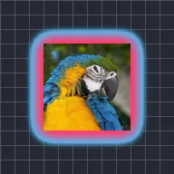

Contourverloop

Schildert een verloop van twee kleuren naar buiten vanaf de randen van de ondoorzichtige delen van de laag, als een zachte gekleurde halo.
Instellingen
| Instelling | Type | Bereik | Standaard |
|---|---|---|---|
| Kleur 1 | Kleur | – | #FF3C6E |
| Kleur 2 | Kleur | – | #3CC8FF |
| Breedte | Getal | 1 tot 300 | 25 |
| Alfa | Getal | 0% tot 100% | 100% |
| Vulling | Getal | 0% tot 100% | 100% |
| Uitfaden | Aan of uit | – | Uit |
| Spreiding | Keuze | Vervaging, Afstand | Vervaging |
| Verschuiving | Getal | 0 tot 2000 | 0 |